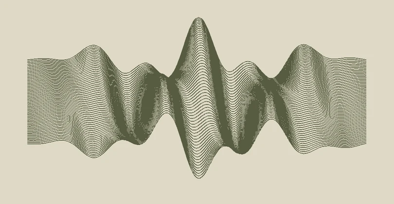

Pulse Study
Reading a pulse in portrait video.

Signal interferenceThe question
Remote photoplethysmography (rPPG) estimates pulse-related changes in light reflected from skin. The proposed study asks whether agreement between facial regions could contribute one piece of evidence during deepfake analysis.
Proposed method
Track the cheeks and forehead across a consented clip, summarize colour changes over time, and compare the resulting signals. An analyst would see the traces alongside the frames and the intervals where tracking became unreliable.
What would count as evidence?
Compare matched original and manipulated clips under different levels of compression, lighting and motion. Track false alarms on genuine video and reserve an inconclusive outcome for weak signals. This is a research proposal with no measured detection performance.
Proposed flow
- Track facial regions
- Estimate colour traces
- Compare regions
- Review signal quality